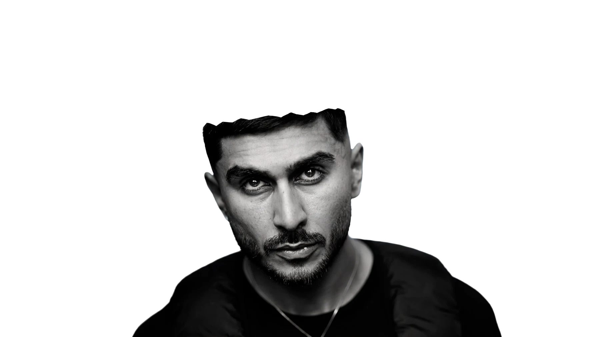
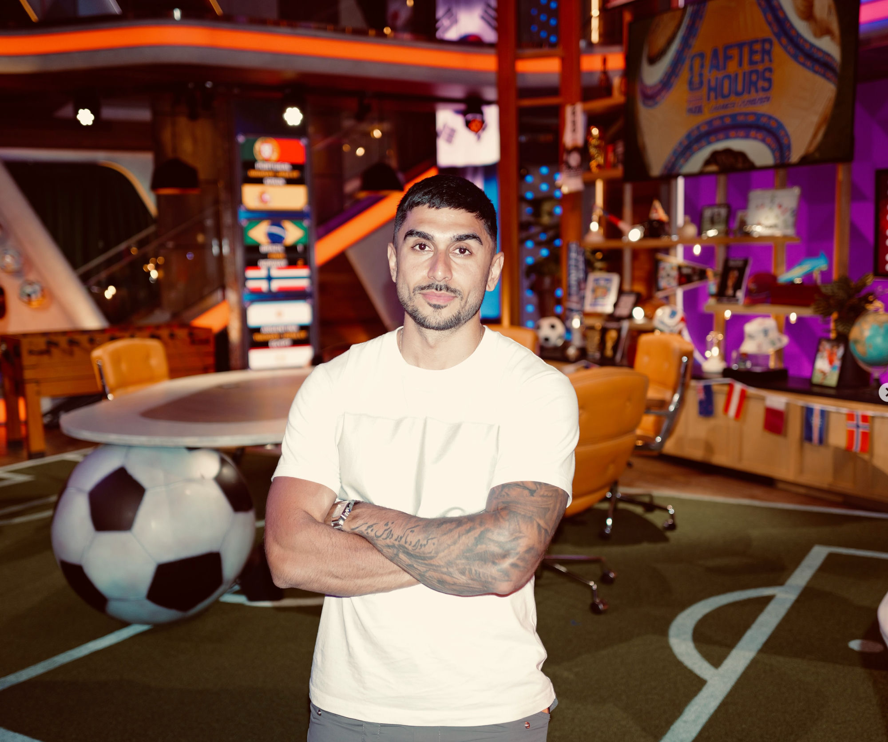
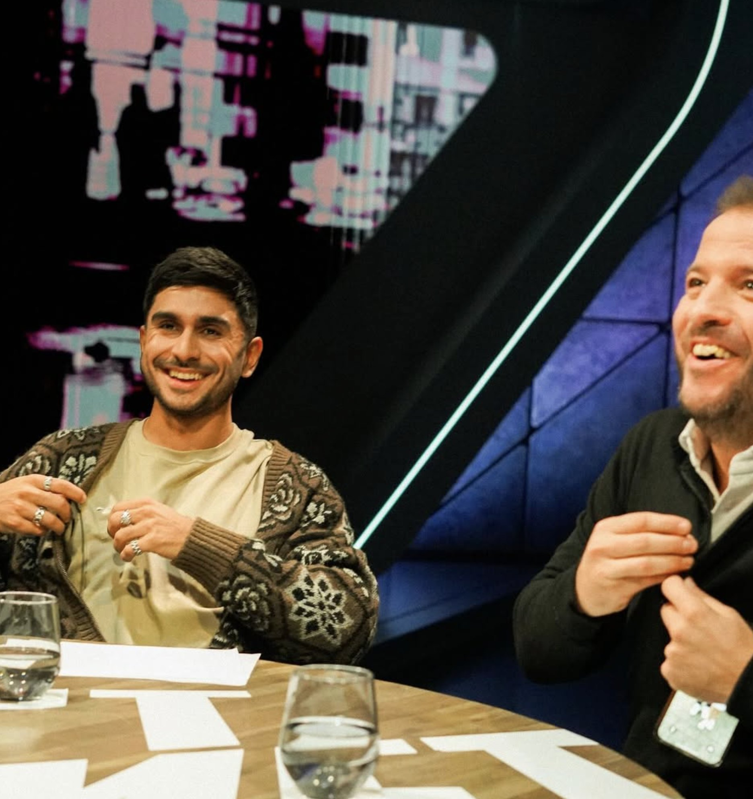
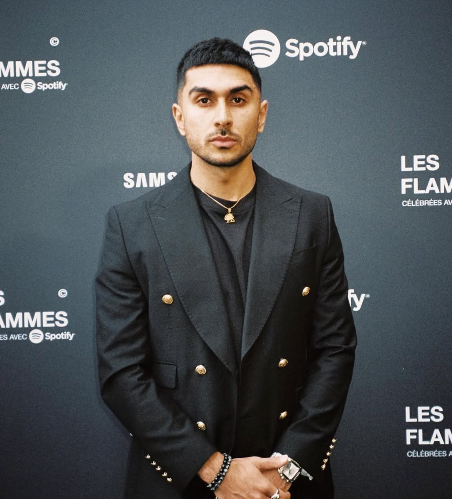

ARMIN SHAH

Award-winning creative strategist and storyteller working across football and culture.
About
Armin Shah is an award-winning creative strategist and storyteller working at the intersection of football and culture. He develops ideas, formats and stories that connect brands, athletes and audiences through culture.
Over the past decade, his work has evolved from independent media into collaborations with some of the biggest names in sports, media and culture, always guided by the same approach: understanding culture first, then creating something that belongs within it.


Football and culture, as one story
More about Armin →Cases
about
Armin Shah works where football and culture meet. As a creative strategist and storyteller he builds ideas and formats that stay with people, from talkshow to podcast, from brand to generation.

Experience
Creator, Producer & Host
Ziggo Sport
2023 — present
Co-Founder & Creator
The Legacy Show
2025 — present
Founder, Creator & Host
CONVO
2017 — present
Creative Director, Benelux
Complex Networks
2021 — 2023
Highlights